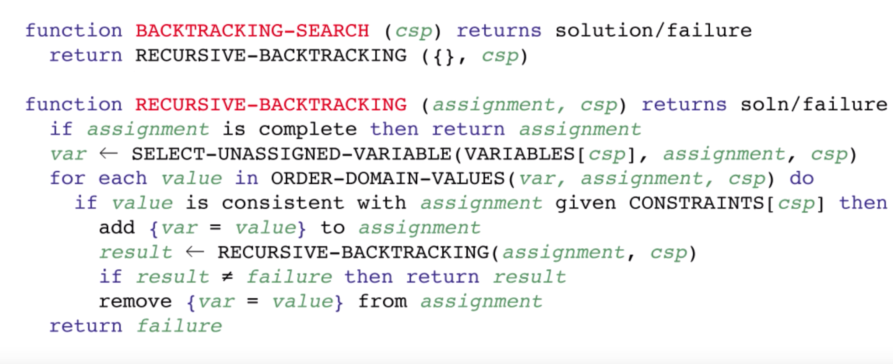
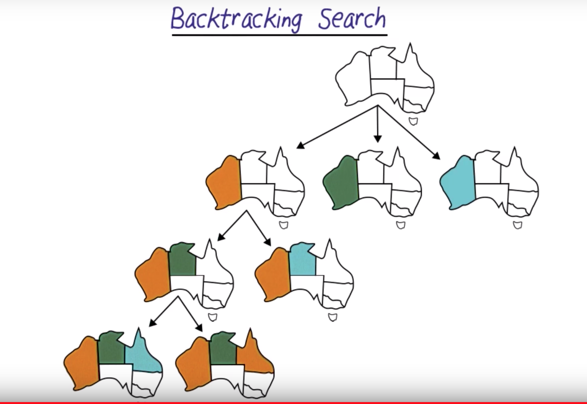
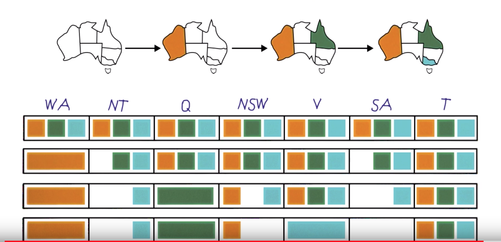
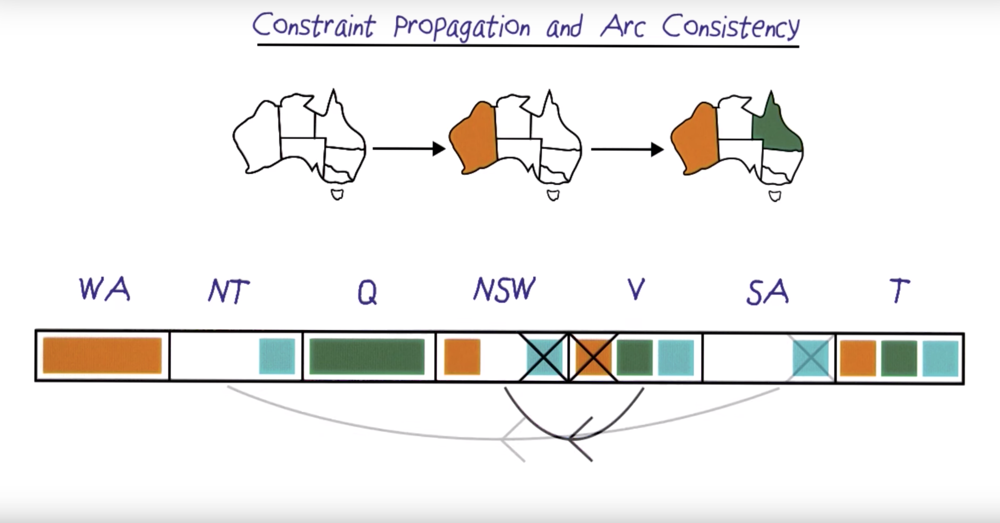

A constraint satisfaction problem is defined mathematically as a set of variables, a set of domains for each variable, and a set of constraints that limit which values in each domain are a valid assignment for each variable.
Constraint Satisfaction Problems (CSP) can be framed as a Triple <X, D, C> :
X is a set of variables, {X1, …, Xn}.D is a set of domains, {D1, ..., Dn}, one for each variable.C is a set of constraints that specify allowable combinations of values.Notes:
D_i consists of a set of allowable values, {v1,...,vk} for variable X_i.C_i consists of a pair ⟨scope, rel ⟩, where scope is a tuple of variables that participate in the constraint and rel is a relation that defines the values that those variables can take on.X_1 and X_2 both have the domain {A,B}, then the constraint saying the two variables must have different values can be written as ⟨(X_1, X_2), [(A, B), (B, A)]⟩ or as ⟨(_X1, X_2), X_1 ≠ X_2⟩.The 4-queens problem asks you to place 4 chess queens on a 4x4 grid such that none of the queens are in "check" (i.e., no two queens occupy the same row, column, or diagonal). The problem can be expanded to standard 8x8 chessboards as the "8-queens" problem, or generalized to any NxN grid as the "N-queens" problem.
Map coloring is a problem that asks for an assignment of distinct colors to each region of the map. While it seems like a trivial problem, map coloring is an intuitive way to describe more complex equivalent problems relevant in other parts of computer science. Problem statement: color each region either orange, green, or blue in such a way that no neighboring regions have the same color.
X = {WA,NT,Q,NSW,V,SA,T}D_i = {red , green , blue}C = {SA≠WA, SA≠NT, SA≠Q, SA≠NSW, SA≠V, WA≠NT,NT≠Q, Q≠NSW, NSW≠V}Backtracking is a general algorithm for finding all (or some) solutions to some computational problems, notably constraint satisfaction problems, that incrementally builds candidates to the solutions, and abandons a candidate ("backtracks") as soon as it determines that the candidate cannot possibly be completed to a valid solution.(Wikipedia)


The basic idea of searching for a solution in a CSP is that you guess assignments var = value in order to advance to the next state until every variable is assigned to a valid value. If we used a standard depth first search, then for n variables each with d possible values the branching factor of the resulting tree would be nd at the top level, (n-1)d at the second level, (n-2)d at the next level, and so on. The total branching factor would be n! d^n when there are only d^n possible assignments.
While depth first search is very exhaustive search, backtracking tries to removes some of the redundancies of the depth first search. Backtracking is identical to depth first search order, but it only evaluates a single assignment order for the variables and it reverts an assignments whenever the current state is inconsistent with any of the problem constraints. Backtracking will typically find a solution= faster than depth first search.
One key feature of backtracking search is that the choice of which variable to assign first and the choice of which value to assign can have a big impact on the efficiency of the search.
In backtracking algorithms, look ahead is the generic term for a subprocedure that attempts to foresee the effects of choosing a branching variable to evaluate one of its values. The two main aims of look-ahead are to choose a variable to evaluate next and the order of values to assign to it.
In a general constraint satisfaction problem, every variable can take a value in a domain. A backtracking algorithm therefore iteratively chooses a variable and tests each of its possible values; for each value the algorithm is recursively run. Look ahead is used to check the effects of choosing a given variable to evaluate or to decide the order of values to give to it. The simpler technique for evaluating the effect of a specific assignment to a variable is called forward checking. Given the current partial solution and a candidate assignment to evaluate, it checks whether another variable can take a consistent value. In other words, it first extends the current partial solution with the tentative value for the considered variable; it then considers every other variable {\displaystyle x_{k}} x_{k} that is still unassigned, and checks whether there exists an evaluation of {\displaystyle x_{k}} x_{k} that is consistent with the extended partial solution. More generally, forward checking determines the values for {\displaystyle x_{k}} x_{k} that are consistent with the extended assignment.
For example, in the map coloring problem below, choosing the colors as follows will end in deadblock, so, we should backtrack and choose a different path.

A look-ahead technique that may be more time-consuming but may produce better results is based on arc consistency. Namely, given a partial solution extended with a value for a new variable, it enforces arc consistency for all unassigned variables. In other words, for any unassigned variables, the values that cannot consistently be extended to another variable are removed. The difference between forward checking and arc consistency is that the former only checks a single unassigned variable at time for consistency, while the second also checks pairs of unassigned variables for mutual consistency.
Example of arc consistency applied to the map coloring problem above:

Constraint satisfaction is a general problem solving technique for solving a class of combinatorial optimization problems by imposing limits on the values in the solution. The goal of this exercise is to practice formulating some classical example problems as CSPs, and then to explore using a powerful open source constraint satisfaction tool called Z3 from Microsoft Research to solve them.
Find the details of the problem in this repo
Microsoft Research Z3
Google OR Tools
SAT/SMT by Example
Tractability in CSP
Satisfiability Solvers
Non-convex MILP
The Alldifferent Constraint